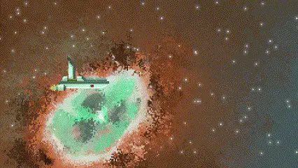
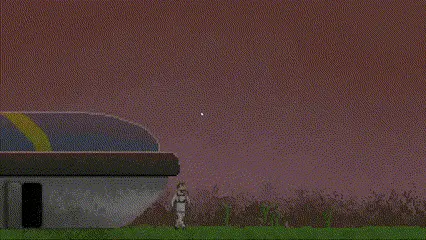

Gameplay programmer
LUSÍADA-1
LOST SIGNAL

Far from home.
Drawn into the unknown.
A mission ahead.
A family behind.
A narrative space adventure about a man who leaves his family for an intergalactic mission.
Exploration carries the story. My work focused on lighting and camera: shaping the atmosphere of space and giving important moments a more cinematic presence.
- Role
- Gameplay programmer
- Engine / language
- Unity / C#
- Focus
- Lighting & camera
- Status
- Released

Make space feel vast.
Make moments feel close.
Light gives
the void a shape.
The atmosphere shifts from deep darkness to intense light in regions such as nebulae and supernovas. The ship needs to belong to that changing environment.
Implementation
Light that travels
with the scene.
I used GameObjects with Light2D and Global Light components that move with the visual elements. A normal map lets the ship's surface respond to that lighting.
The scene supplies light.
The surface supplies depth.
Two contributions meet in the rendered ship: the surrounding light and the surface information in its normal map.
Light2D + Global Light
Light components move with visual elements.
Ship normal map
Surface direction informs the lighting response.
A ship within
its environment.
Lighting interacts with the spacecraft's surface as the journey unfolds.
A visual explanation of the component relationships, rather than a reconstruction of the project's code.
A change in scale.
A moment
of impact.
Camera work brings emphasis to collisions and planetary approaches.
Alongside the lighting, I worked on making these events more impactful and cinematic. The camera helps connect the scale of the world to the experience of travelling through it.
Distance / Discovery / Scale
There is always
more beyond.
Small against the environment.
Present within the light.
Atmosphere is
part of the
player experience.
Lighting and camera connect technical implementation to emotional scale.
This work brought together moving light components, normal-map response and camera emphasis. The central lesson was to treat the ship, its surroundings and the viewpoint as parts of the same experience.
Let's build something
NOCTURNE
BATTLEGROUNDS
Another world. Another set of systems.